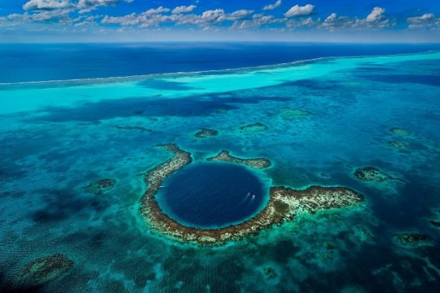
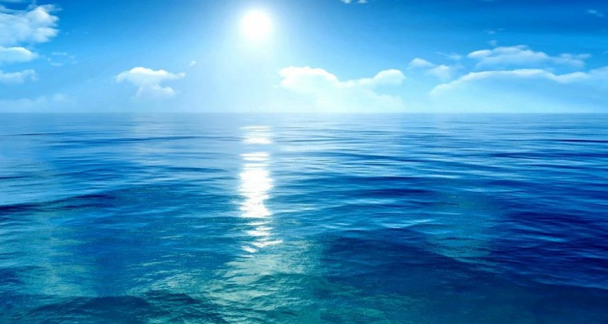
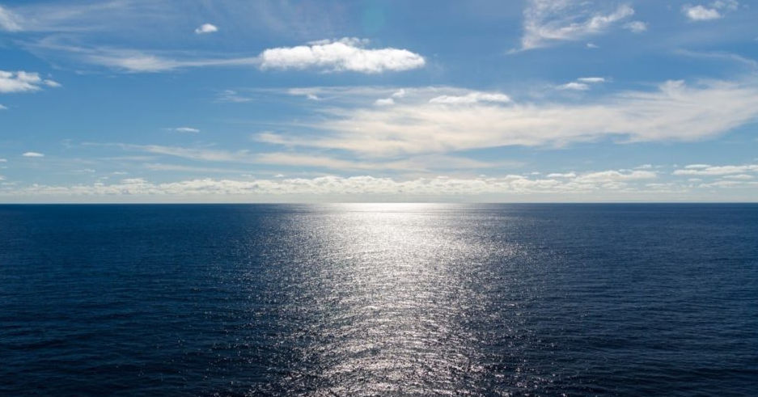
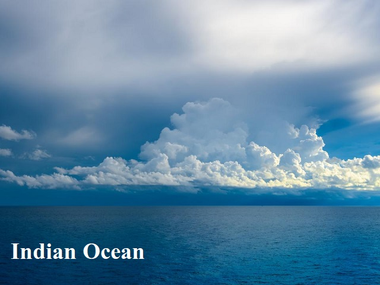
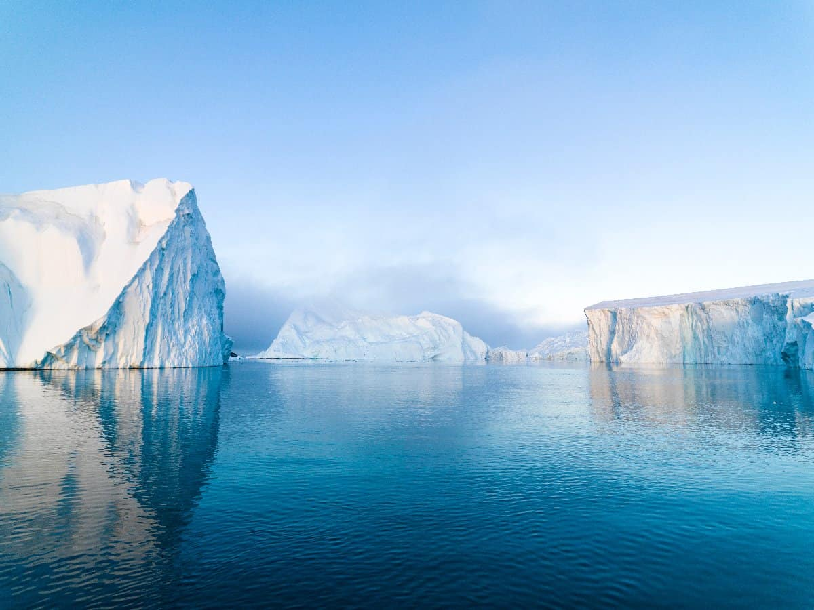
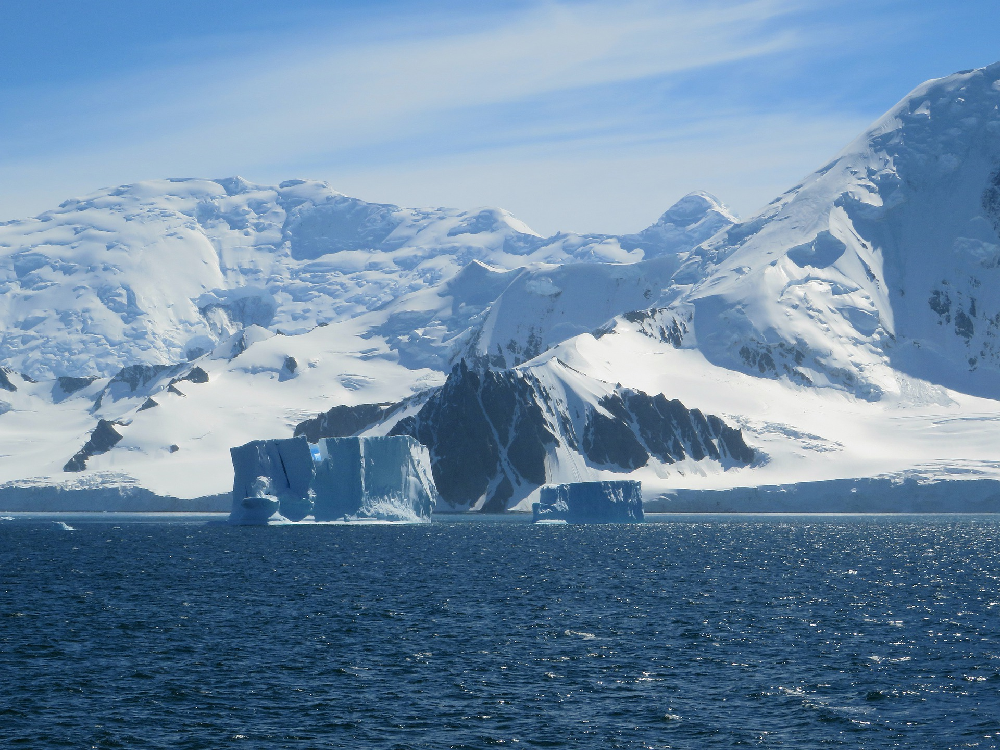

Океани світу – скільки океанів і їх назви
Водна оболонка планети Земля, навколишнє все материки, а також острова покриває близько 71% всієї поверхні планети. Існує умовний поділ світового океану на частини. Сьогодні Світовий океан розділений на 5 океанів. У Міжнародній географічної організації до чотирьох відомим океанам Тихому, Індійському, Північного Льодовитого і Атлантичного, у 2000 році було вирішено виділити і додати Південний океан.
Зміст
Тихий океан
Тихий океан розстеляється в західному напрямку між двома материками Австралією і Євразією, в бік сходу між Північною і Південною Америкою, а на півдні омиває Антарктиду.
Свою назву океан отримав в той час, коли Ф. Магеллан здійснював кругосвітню подорож і перетинав Тихий океан. У цей період була прекрасна погода, не було вітру, і водна гладь була спокійною. І мандрівник назвав його «Тихим».
Тихий океан є найстаршим за віком, найбільшим за площею, а також по глибині. Його площа дорівнює 178 684 000 квадратних кілометрів, глибина має середнє значення близько 4000 метрів. Через води Тихого океану в районі 180-го меридіана є лінія, яка відповідає зміні дати.
Тихий океан ще називають «Великим». Адже він займає третину нашої планети. За формою Тихий океан нагадує овал, а в екваторіальній частині він є найбільш широким.
Область, яку оточує Тихий океан, унікальна і різноманітна за своєю топографії. Геологи називають область, навколишнє Тихий океан – вулканічне вогненне кільце. Вона отримала таку назву, тому що в ній відбуваються постійні землетрусу і виверження вулканів . На дні океану багато точок, де вивергаються підводні вулкани, за рахунок магми, що витісняється з мантії Землі. Дно Тихого океану складається з хребтів і жолобів, які знаходяться на великій глибині.
Кліматичні умови залежать від того, на якій широті знаходяться води океану, який поруч материк і тип повітряних мас . В районі екватора переважає тропічний клімат. Там більшу частину року тепло і волого.
У північній і південній частинах кліматичні умови ближче до помірних. Є райони, в яких постійно дмуть вітри (пасати), що впливають на клімат. Також Тихий океан є місцем утворення тайфунів і тропічних циклонів. Але вода в ньому прозора і чиста, вона вражає своїм темно-синім кольором. Температура в основному знаходиться в районі 25 градусів. У водах океану живуть і риби , і ссавці , і планктон. На морському дні влаштувалися безхребетні тваринні організми і падальщики.
У мілководних районах Тихого океану є багато коралових рифів. Недалеко від Австралії розташований найбільший на землі Великий риф, який створили океанські організми.
Атлантичний океан
Другий за величиною океан на земній кулі – Атлантичний. Океан очевидно названий на ім’я героя з давньогрецькоїміфології Атланта. Якщо враховувати прилеглі моря, то його площа становить 106 460 000 квадратних кілометрів. Це майже 22% від площі всієї нашої планети. Форма океану звивиста.
Розташований він у східній частині між Європою та Африкою, з боку заходу між Північною і Південною Америкою. У північній частині Атлантичний океан возз’єднується з Північним Льодовитим і розділяє Ісландію і Гренландію. З боку півдня він межує з трьома океанами: Тихим, Індійським і Південним.
Середнє значення глибини близько 4000 метрів, а найглибшою точкою є жолоб Пуерто-Ріко – 8 605 метрів. Атлантичний океан самий солоний у порівнянні з іншими океанами. Води океану циркулюють в різних течіях, тому вода в одних частинах тепла, а в інших – прохолодна. Кліматичні умови знаходяться в прямій залежності від глибини і вітрів. Біля узбережжя Африки в осінній період формуються сильні ураганні вітри. З боку півдня на океан постійно діє тропічний сухий вітер, тому небо завжди вкрите красивими ватяними хмарами. На Атлантиці відсутні циклони. Вода має темно-блакитний відтінок, а в районі Африки і у південних берегів Бразилії набуває яскраво-зелений колір.
Екваторіальна частина відрізняється цілорічної спекотною погодою, і вода в прибережних зонах має каламутний колір. Очевидно з впадають сюди численних річок.
Різноманітність флори і фауни дивує великою кількістю: хижі і летючі риби , акули , мангрові зарості, величезна кількість водоростей і морських трав. Рослинність в основному розташовується у верхніх шарах океанічних вод.
Головною визначною пам’яткою Атлантики є Серединно-Атлантичний хребет. Його ширина приблизно 1600 кілометрів і він в основному знаходиться під водою. Надводний шар дорівнює приблизно 2500 метрів. Частково вершини хребта утворюють надводні острови.
В Атлантичний океан стікається прісна води всіх річок, тому вода в ньому Малосолоне. Тому коралів в ньому немає. Широченний протоку Атлантичного океану знаходиться між двома полярними областями планети. Він впадає в Тихий океан, але мешканці їх середовищ відрізняються через відмінності в температурах. На дні Атлантики знайшли газові і нафтові родовища і дорогоцінні камені.
Індійський океан
Третій за величиною океан на земній кулі – Індійський океан. Його площа становить 70 560 000 квадратних кілометрів. Води океану розташовані між наступними материками: Африка, Азія, Австралія. Середня глибина океану трохи менше 4000 метрів. Найглибша западина, що носить назву Зондського жолоба, має глибину 7258 метрів.
Північна частина Індійського океану схожа на море, вона різко врізається в берегову частину. А в Південній півкулі він має найбільшу ширину. Всього площа океану становить в межах 20% від площі, займаної Світовим океаном.
Кліматичні умови в Індійському океані змінюються при пересуванні від північного напрямку до південного. У північній області переважають мусони . У зимовий час сухе повітря спрямовується до материка Євразія, а влітку рухається в сторону океанічних вод. З усіх океанів світу погодні умови в Індійському океані є найтеплішими. Припливи, що виникають на півночі океану в основному слабкі. Але якщо виникає одиночна хвиля, то вона розвиває дуже велику швидкість (до 20 км / ч), висота її може досягати 7-10 метрів.
В Індійському океані є архіпелаг, в якому налічується 115 островів. Є гранітні острова, а також коралові, на яких живуть найбільш різноманітні морські мешканці. Острівні представники фауни Індійського океану: морські черепахи , морські птахи і багато інших екзотичні тварини. Більшість тваринного світу є ендемічним, тобто обмежується географічним місцем проживання і чисельністю.
В Індійському океані спостерігається постійне скорочення видів тваринного і рослинного світу. Це пов’язано з тим, що температура води зростає, що призводить до вимирання планктону, в результаті чого відбувається порушення харчового ланцюга. Води Індійського океану відрізняються чистотою і прозорістю. Їх відтінок дуже красивий: він розташований в діапазоні від темно-блакитного до блакитного кольору.
Виявляється, морепродукти і рибу людству поставляє саме Індійський океан. У глибинах океану є велика кількість нафтових запасів, корисних копалин, перлів, а в прибережних районах багато дорогоцінних каменів.
Північний Льодовитий океан
Найменшу площу з наявних на нашій планеті океанів має Північний Льодовитий океан. Вона дорівнює 14 060 000 квадратних кілометрів. Середнє значення глибини океану приблизно 1205 метрів. Найбільше значення найглибшої западини – 4665 метрів. Розташовується Північний Льодовитий океан між Євразією і Північною Америкою, а основна маса води зосереджена близько полюса. У самому центрі океану знаходиться точка Географічного Північного полюса.
Більшу частину року океан майже весь покритий льодом, товщина якого приблизно три метри. Влітку льоди частково тануть. Тут переважає полярний клімат і низькі температури повітря. Найбільш високою є температура рівна мінус 20 градусів. Але навіть при таких низьких температурах, західна область океану не покривається крижаними брилами.
Оновлюють і поповнюють Північний Льодовитий океан води, що надходять з Тихого і Атлантичного океанів. Завдяки цьому він отримує теплу воду і має здатність обігрівати морських мешканців. Найвідоміша характеристика клімату – наявність полярних днів і ночей.
У Північному Льодовитому океані найнижчий вміст солі в порівнянні з іншими океанами планети. Це пов’язано з низькою швидкістю випаровування холодної води і надходженням прісної води з річок та струмків, розбавляючих концентрацію солі.
Серед живих організмів є водорості, які дивним способом пристосувалися до життя в дуже холодній воді, а також на крижинах. У воді живуть такі риби , як навага, палтус і тріску. Звичними мешканцями Північного Льодовитого океану є кити, тюлені і моржі.
Баренцове море багате планктоном, який в літній сезон збирає птахів і там утворюються цілі пташині базари. Уздовж берегів океану геологи знайшли родовища нафти і природного газу, а також золота.
Південний океан
Наймолодшим океаном на Землі є Південний океан. Його офіційне відділення відбулося у 2000 році за рішенням Міжнародної гідрографічної організації. Але в атласах і на картах він так підписувався ще в двадцятому столітті.
Південний океан є умовно позначених збігом південних областей трьох океанів: Тихого, Атлантичного і Індійського. Він повністю омиває Антарктиду. А ось західні і східні кордони Південного океану поки ще точно не визначені. За площею він займає четверте місце. Вона приблизно дорівнює 20 300 000 квадратних кілометрів. Найбільша глибина становить 8264 метра (западина Метеора).
У водах Південного океану є багато островів. Більшість з них утворено в результаті виверження вулканів, тому у них переважає гірський рельєф. Острови є хребти, улоговини і невеликі підняття.
Клімат не можна віднести до дуже холодного, але він і не є теплим. В середньому температура води знаходиться в діапазоні від -2 до +10 градусів. У районі Антарктиди постійно дмуть сильні вітри . Тому вздовж берега не утворюється крижаний покрив протягом всього зимового сезону.
Південний океан насичений айсбергами, які плавають в ньому цілий рік. Деякі айсберги мають дуже великі розміри. Їх довжина може досягати до 400 метрів. Величезні крижані брили іноді стають причиною корабельних аварій.
Відмінною особливістю Південного океану є наявність в ньому найбільшого і дуже потужного холодного поверхневого течії. Воно називається антарктичним циркумполярною течією, яке рухається в східному напрямку, і перевищує в сто раз потоки всіх разом узятих річок світу.
Кліматичні умови Південного океану є суворими. Незважаючи на це, в ньому досить активно розвиваються живі організми. Приполярних місце сприятливо для розвитку фітопланктону. Рельєфність дна океану не зовсім сприятлива для обміну між фауною і флорою. А мешканці мають безпосередню залежність від умов. Тут існує більше 180 видів діатомових водоростей. У Південному океані живе досить багато зоопланктону, голкошкірих, губок, криля, риб з сімейства нототенійових. Головними мешканцями Південного океану є пінгвіни.
Чому Південний океан виділили окремо? Океанографічні дослідження по вивченню течій в океанах показали, що близько Антарктиди є незвичайні явища, пов’язані з майбутнім глобальним потеплінням. Тому океан вирішили виділити як особливу екологічну систему та назвали п’ятим океаном.
Але в науковому світі ще триває дискусія про кількість океанів на нашій планеті. Незалежно від зазначених океанів на карті, на земній кулі є один Світовий океан. Всі океани Землі безпосередньо пов’язані один з одним і утворюють єдину систему.